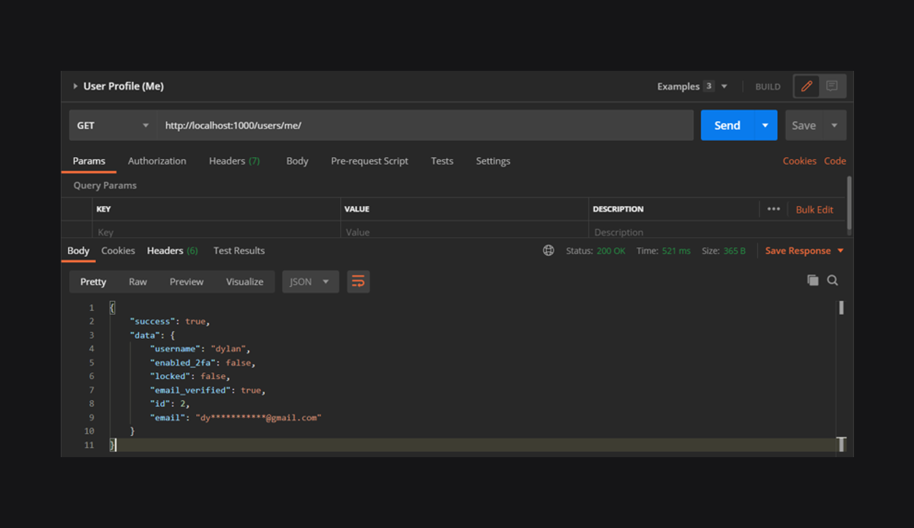
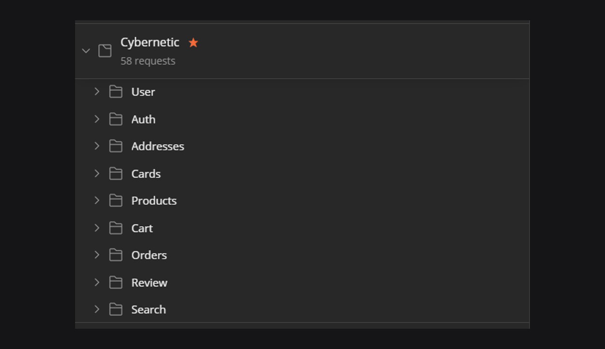
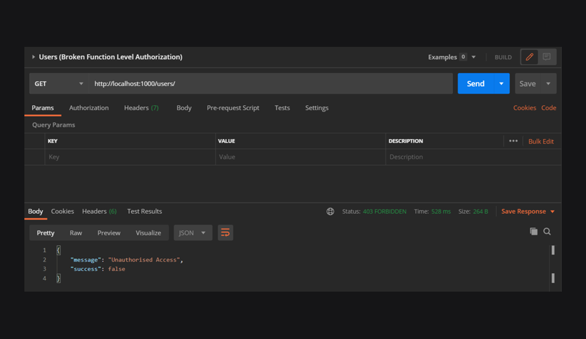
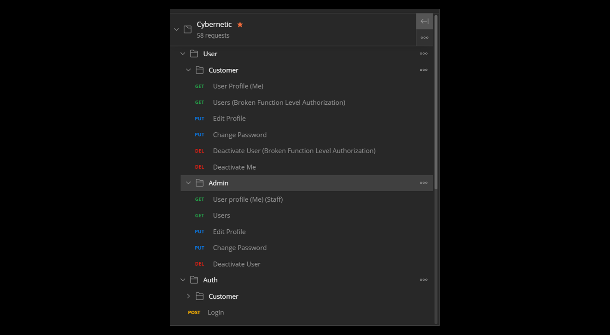
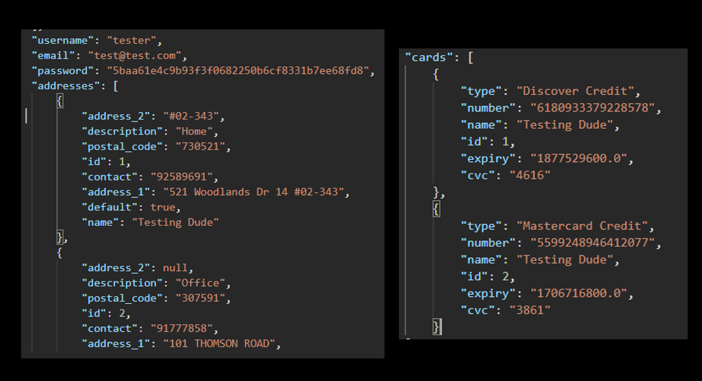
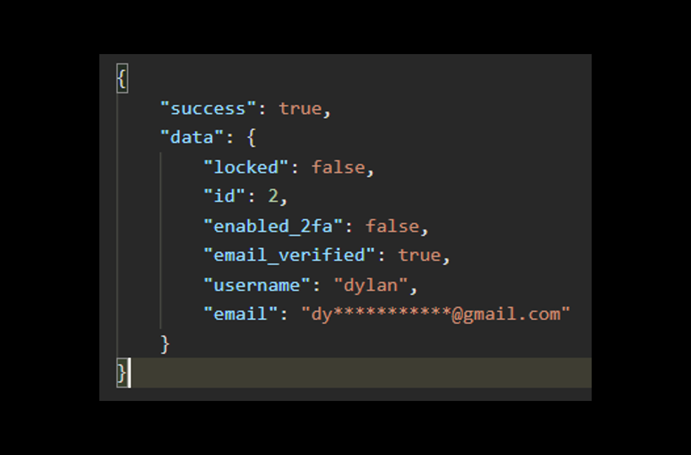
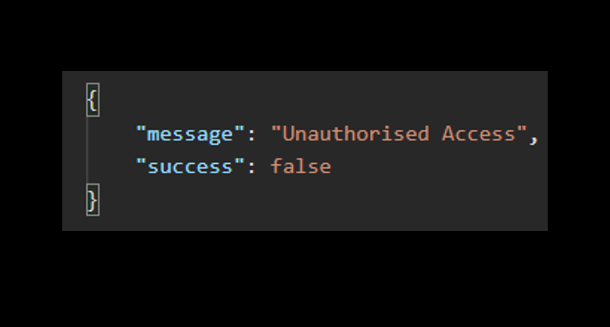

Cybernetic (Web API)



Project information
- Category: Web API
- Purpose: School Project
- Project Date: 04/2020 - 08/2020
- Result: Distinction
To be eligible for module distinction, you must have passed the module with a Grade A in your first attempt. The number of distinctions awarded for each module is capped at not more than the top 5% of the number of students taking the module. - Description:
Cybernetic Web API is an E-Commerce Web API for both customers to purchase electronic products and staff to manage the business.
Project Details
Background Information :
Cybernetic was a project completed as part of my Nanyang Polytechnic Year 2 Semester 1 Application Security Project Module.
The main project objective is to apply the knowledge and skills acquired to develop and demonstrate an insecure and secure web application/APIs.
After forming the team of 4, we were tasked with implementing a web-based application or project with RESTful APIs with OWASP Top 10 Vulnerabilities. After discussion, we decided to work with OWASP API Security.
I was assigned as a normal team member. Besides carrying out allocated tasks, I volunteered to take the initiative to design the postman collection for testing of APIs and overall logic of the API.
We use Bandit for static code analysis and automated the process with the use of Github Actions. We used OWASP ZAP for dynamic application analysis
I was also tasked to do Dynamic Code Analysis with the use of OWASP ZAP and postman collection.
- Step 1 : I created a set of postman collection with all the API calls for testing and then export to postman collection json format
- Step 2 : I convert the postman collection json file to OpenAPI format
- Step 3 : I import the new OpenAPI file to OWASP Zap with the URL for cybernetic
- Step 4 : Lastly, I run a automated scan on OWASP Zap and export the report used for security analysis.
Image below shows part of the postman collection creatad

I am personally in-charged of API regarding product management by admin and product viewing for the customer and tasked with the following vulnerabilities:- Excessive Data Exposure
- Filtering
Filter Data on the Server Site with the use of the “Exclude” and “Only” build-in function from Marshmallow to whitelist and blacklist the data in the API response. - Data Masking
Hide parts of sensitive information. For example:
- PhoneNumber : ******45
- Email : Ja***@gmail.com
- AWS Encryption SDK
The AWS Encryption SDK is an encryption library designed to make it easy for everyone to encrypt and decrypt data using industry standards and best practices. - Broken Function Level Authorization
Image below shows the insecure API response
when the user access their personal information

Although the data can be filtered on the client site, possible exploitation of Excessive Data Exposure can be performed by sniffing the traffic to analyze the API responses leaking sensitive data such as credit card information.
To secure the API, I have done the following :
Image below shows the secure API response
when the user access their personal information

Image below shows the secure API response
when the authenticated customer tried to access staff page

E.G. Administrative functions being accessible to anonymous users or non-privileged users.
I secure the API by using JWT Tokens to authenticate user identity which then validate for administrative rights on administrative functions.
Challanges
-
Challange
Inexperience in developing API as this is the first time we make an API as a group.
Solution
I reference existing APIs such as Shopee API to understand how does a standard API call works. -
Challange
Insufficient testing. The insecure cybernetic were tested by Bandit and ZAP however it is insufficient to identify all types of vulnerabilities such as excessive data exposure.
Solution
After testing with Bandit and ZAP, I did further white-box and black-box testing manually to ensure everything works normally and identify possible vulnerabilities that are not found.
Conclusion
Overall, this project has been a completely new challenge as we are given two options of making a web application
which we have done before in previous projects or APIs which is an entirely new thing to us. We decided to try out this new challenge.
It is glad that we have completed the project as a group and met our expectation, although we have no experience in developing an API.
We have also learned many new technologies such as Amazon Web Service, Marshmallow to complete the project.
The key takeaway from this project is never afraid of trying out new things as in the current day and age; we will be able to work things out with rich online resources.
- Python
- Flask
- MySQL
- Marshmallow
- AWS Key Management Service (KMS)